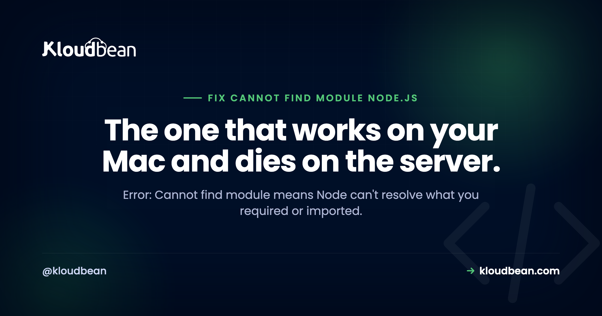

Error: Cannot Find Module in Node.js: How to Fix It

Few errors waste more time than Error: Cannot find module, because it shows up for at least five unrelated reasons and the message rarely says which one. Sometimes a package isn't installed. Sometimes a path has a typo. And sometimes the code runs perfectly on your laptop and breaks the instant it hits a Linux server, thanks to a case-sensitivity gotcha almost nobody expects. This guide sorts the causes into two clear families and gives you the exact fix for each, so you stop guessing.
First decide what's missing. If it's a package name like express, the module isn't installed, run npm install and confirm it's in dependencies, not devDependencies. If it's a relative path like ./routes/user, the path, the filename case, or a missing ESM .js extension is wrong. If it only breaks in production, suspect case sensitivity on Linux or a build step that didn't run. Match the name exactly, fix the path, and make sure your build and install run on deploy.
What "Cannot find module" actually means
Node throws this when its module resolver can't locate what you asked for. When you write require("x") or import ... from "x", Node runs an algorithm: if x is a bare name it looks in node_modules, and if it starts with ./ or ../ it resolves a file path relative to the current file. "Cannot find module" simply means that search came up empty. So the very first question is which kind of lookup failed, because the fixes are completely different.
Is it a package or a file?
Look at the name in the error. Cannot find module 'express' (no slash, no dot) is a package that Node expected in node_modules. Cannot find module './routes/user' (starts with a dot) is a file in your own code. That single distinction splits the whole problem in two. Everything below follows from it.
Package not found: the dependencies trap
If a package is missing, the obvious first move is to install it, assuming the install actually completes. An install that aborts with npm ERR! ERESOLVE leaves node_modules exactly as empty as it was, so reading the peer dependency conflict npm reports comes before anything else. Otherwise, confirm the package is really there:
# Is the package installed and at what version?
npm ls express
# Clean reinstall (matches your lockfile)
rm -rf node_modules package-lock.json
npm installThe subtler version bites in production. When you deploy with NODE_ENV=production or run npm install --omit=dev (or npm ci --omit=dev), npm skips everything in devDependencies. If your running app imports a package that's listed under devDependencies, it works locally (where dev deps are installed) and throws "Cannot find module" in production (where they aren't). The fix is to put anything the app needs at runtime in dependencies:
# Move a runtime package into dependencies
npm install some-runtime-package --save
# Reproducible production install (skips devDependencies)
npm ci --omit=devThis is one of the most common "works on my machine" failures, and it's always worth a look when the missing module is something like a runtime helper you assumed was a normal dependency.
File not found: paths, case, and ESM extensions
For a relative path, there are three usual suspects. The first is a plain wrong path or typo, easy to spot once you look. The second is the big one:
Case sensitivity. macOS and Windows filesystems are typically case-insensitive, so ./routes/user happily finds a file named User.js. Linux is case-sensitive, so the same import fails in production with "Cannot find module." This is the classic "worked on my Mac, broke on the server" bug.
// File on disk is routes/User.js
const user = require("./routes/user"); // works on macOS, FAILS on Linux
const user = require("./routes/User"); // correct on every platformThe rule: make the import match the filename's case exactly, every time. The third suspect shows up with ES modules. In ESM, you must include the file extension, so ./routes/user won't resolve, it has to be ./routes/user.js:
// ESM requires the extension
import { router } from "./routes/user.js"; // not "./routes/user"The build-output trap
If you use TypeScript or a bundler, "Cannot find module" often means the build didn't produce what you're trying to run. Node tries to load dist/index.js, but dist was never generated, or your package.json main and start script point at a file that doesn't exist. Check that the build actually runs before start, and that the paths line up:
# Make sure the build runs, then start the built output
npm run build # e.g. tsc, produces dist/
node dist/index.js
# package.json should agree
# "main": "dist/index.js",
# "scripts": { "build": "tsc", "start": "node dist/index.js" }On a fresh server with no dist committed (as it shouldn't be), forgetting the build step is a guaranteed "Cannot find module" on boot.
Fix checklist
- Read the name: package (bare) or file (starts with a dot)?
- Package: run
npm ls <name>; if missing, install it and confirm it's independencies. - File: check the path and match the filename's case exactly.
- Using ESM? Add the
.jsextension to relative imports. - Production only? Suspect case sensitivity or a build step that didn't run.
- TypeScript/bundler? Confirm the build ran and
main/startpoint at real output.
| What you see | Likely cause | Fix |
|---|---|---|
| Cannot find module 'express' | Not installed, or in devDependencies | Install it into dependencies |
| Cannot find module './routes/user' | Wrong path or filename case | Match the exact path and case |
| Works local, fails on server | Case sensitivity on Linux | Fix import casing to match the file |
| Cannot find module './x' (ESM) | Missing file extension | Add .js to the import |
| Cannot find module 'dist/index.js' | Build didn't run | Run the build before start |
How managed CI/CD catches this early
Most of these bugs hide in the gap between "my laptop" and "the server." A consistent build pipeline closes that gap. On Kloudbean, deploys run from a GitHub push through managed CI/CD: your install and build commands run on the server every time, in a Linux environment, with live build logs streaming to the console. That means the case-sensitivity trap and the missing-build trap surface in the build log the first time, not as a 2am production crash. You still have to write the correct import, but you find out immediately when you didn't.

Once error is settled
Clean builds and config prevent most of these. See CI/CD auto-deploy from GitHub for a build that runs on every push, environment variables done right for the config side, and framework guides like deploy an Express app and deploy a NestJS app. Chasing a different error? Try ECONNREFUSED in Node.js or EADDRINUSE: port already in use.
Read the log, fix it, ship again.
Deploy from Git, watch the build output as it runs, and open the app error log when a process refuses to start. Managed processes restart on crash, and backups are automatic.
- ✓ Live build logs
- ✓ Deployment history
- ✓ Logs viewer
- ✓ Managed process restarts
- ✓ Automatic backups
- ✓ Git deploy
FAQ
Why does Node say Cannot find module when the package is installed?
Usually because it's installed as a devDependency but needed at runtime, so a production install that skips dev dependencies drops it. It can also be a version or workspace mismatch. Run npm ls <name> to confirm what's actually installed, and move any runtime package into dependencies.
Why does my app work locally but throw Cannot find module on the server?
The most common reason is case sensitivity. macOS and Windows ignore filename case, but Linux doesn't, so importing ./User as ./user works on your machine and fails on the server. Match the import to the file's exact case. A build step that didn't run on the server is the other frequent cause.
How do I fix Cannot find module with a relative path?
Check three things: that the path is correct, that the filename case matches exactly, and, if you're using ES modules, that you included the .js extension. ESM requires the extension, so ./routes/user must be ./routes/user.js. Fixing the case and the extension clears most relative-path failures.
Do I need a file extension in Node imports?
With ES modules, yes, relative imports need the explicit extension like .js. With CommonJS require, the extension is optional. If you switched a project to "type": "module" and imports started failing, missing extensions are almost certainly why.
How do I fix Cannot find module dist/index.js?
That path is build output, so the error means the build didn't produce it. Run your build (for TypeScript, tsc or your build script) before starting, confirm dist exists, and make sure package.json main and the start script point at the real compiled file. On a fresh server the build must run as part of the deploy.
Should I commit node_modules to fix this?
No. Commit your package.json and lockfile, and let the deploy run npm ci to install reproducibly. Committing node_modules causes platform and native-binary problems and bloats the repo. A CI/CD pipeline that installs and builds on the server is the reliable fix.